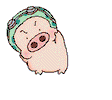
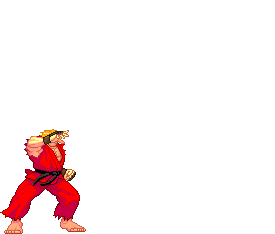

心
理治療或心理諮商透過對話促進當事人認識與接近自己，以日常生活、與他人的互動、具特殊意義之事為素材，透過聆聽與對話觸及深層自我，進而引發療癒的可能
性。
心
理治療或心理諮商透過對話促進當事人認識與接近自己，以日常生活、與他人的互動、具特殊意義之事為素材，透過聆聽與對話觸及深層自我，進而引發療癒的可能
性。
有時你可能會感到無法抑止的憂傷，自我否定，厭倦日復一日的生活日常；挫敗的人際關係 讓你感到無力。想要訴說卻擔心不受接納。
也許你經常感到憂慮，凡事總是往最糟的方向想，在情緒起伏之際傷及身邊的人；或者時常 感到難以掌控自己的生活，只能沉迷在特定事物中麻痺自己。
你關心的人們、你的孩子，在生活中遭遇困難，而你想要了解能做些什麼來協助他們脫離困 境。
生活中遭遇的各種大小事，都可以嘗試利用心理治療/諮商的服務。

 兒
童青少年心理諮商：適應困難、校園霸凌、人際關係、情緒憂鬱。
兒
童青少年心理諮商：適應困難、校園霸凌、人際關係、情緒憂鬱。
成
人心理諮商：人際及情緒困擾、職場適應、兩性與伴侶關係。

 對
於隱私的重視：隱私的維護是當事人權益最重要的一環，我們不與其他機構共享資訊，為來談者保守秘密。
對
於隱私的重視：隱私的維護是當事人權益最重要的一環，我們不與其他機構共享資訊，為來談者保守秘密。
彈性的會談時段：提供夜間時段，可在下班
或放學後進行會談。
自由決定是否繼續會談：當事人可自行決定
持續進行會談與否。
透明的收費：收費如公告項目，此外無其他
費用。
尋求諮商或心理治療的協助前感到焦慮與猶疑是正常的現象，在預約之後，心理師將與 你約定時間進行第一次的會談。
第一次會談中可讓你體會諮商與心理治療可能牽涉的議題以及可能對你的幫助，同時也 可瞭解對於正式會談、個人隱私保護、收費的疑慮，以知悉自身權益。
在初次會談的過程中，並不需要承諾後續的會談進行與否，可嘗試感受自己與心理師的 契合程度，探索對諮商與心理治療的期待、理解諮商與心理治療的限制，或者與心理師討論未來想要進行的方向。
若 是兒童及青少年的諮商與心理治療，第一次會談建議家長前來與心理師會面，以便使心理師了解家長希望在孩子身上看到的改變，心理師也能藉此機會讓家長了解心 理諮商與治療可能對孩子提供的協助以及其限制。另外，心理師也會告知家長如何對孩子介紹諮商與心理治療，以協助孩子順利的進入後續的會談。
每個孩子的特性不同，若在學校、生活中遭遇了困難，常使家長束手無策，此時也 許可考慮為孩子尋求心理諮商的協助。
在兒童與青少年的會談階段，時間是完整屬於孩子們的。
家長通常會想要知道孩子的進度或在會談中透露了哪些訊息，對某些較細膩的孩子來說，當面談論他們的事情會令他們感到不被尊重或難為情，因此家長可與心理師 每隔一段時間以一個完整的時段討論孩子的狀況與教養策略的改善方向。如同成人諮商與心理治療，我們也視保障當事人的隱私為最重要的原則，在與家長 溝通孩子狀況前，心理師會徵詢孩子的意見，且在與家長會談時將以較概括式的敘述為主，並不會吐露會談中的細節。此原則將可確保心理師與孩子形成最有助益的 合作關係。

- 時間與價格：
- 兒童青少年心理諮商：1600元/50分鐘。
- 成人心理諮商：1600元/50分鐘。
- 低收入民眾及學生、特殊境遇者請提出，可酌情調整價格。
- 預約/重要事項：
- 不提供現場預約及諮詢，請利用電話或線上預約。
- 預約時將會與您約定初次會談的時間。
- 通常每週固定的時間會談，若有特別的需求可彈性調整。
- 取消或改期：事前取消並不收取費用，請在約定時間一日之前知會本所。
- 服務時間：
- 電話預約與諮詢時間：週二至週五 13:00-20:00
- 會談時間：依個人預約時間而定。
